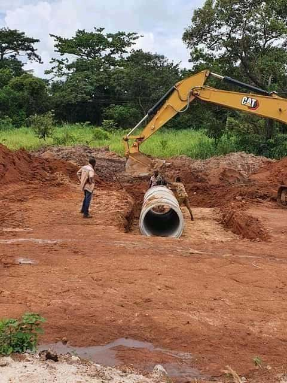

Pose de buses
3 photosTerrassement, calage et pose de buses béton pour le franchissement et l'évacuation des eaux, avec réalisation des ouvrages de tête en béton.

TECHNIC BUILDING SARL intervient en Côte d'Ivoire sur les travaux de génie civil, le bâtiment tous corps d'état et les réseaux : voirie, assainissement, adduction d'eau potable. L'entreprise conduit ses chantiers de l'étude à la réception.
Immatriculée le 16 juin 2023 au Registre du Commerce et du Crédit Mobilier d'Abidjan, elle réunit des techniciens et ingénieurs du bâtiment, de la géotechnique et de la topographie, et dispose de ses propres moyens d'exécution : engins de terrassement, matériel de topographie, atelier de soudure et véhicules de chantier.
Au-delà des travaux neufs, TECHNIC BUILDING prend en charge la réhabilitation d'immeubles et de complexes industriels ou commerciaux, l'entretien, le curage, la ferronnerie et la menuiserie aluminium et métallique, ainsi que l'aménagement d'espaces verts.
Douze activités exercées, du gros œuvre aux finitions métalliques.
Ouvrages, voirie, terrassements et travaux de structure.
Avant et après achèvement, gros œuvre et second œuvre.
Étude, construction et réhabilitation d'immeubles et de complexes immobiliers, industriels ou commerciaux.
Réseaux, caniveaux, regards, entretien et curage d'ouvrages.
Pose et raccordement de conduites, robinetterie et équipements de réseau.
Montage et réalisation d'opérations immobilières.
Fabrication et pose d'ouvrages métalliques sur mesure.
Châssis, portes, façades et vitrages.
Portails, grilles, escaliers et structures secondaires.
Ossatures, couvertures et montage sur site.
Travail des métaux en feuille, soudure et assemblages.
Installations et raccordements en milieu industriel.
Aménagement et entretien des abords.
Chantiers d'assainissement, de voirie et de réseau d'eau potable. Cliquez sur une photo pour l'agrandir.
Terrassement, calage et pose de buses béton pour le franchissement et l'évacuation des eaux, avec réalisation des ouvrages de tête en béton.
Réalisation de réseaux de collecte : caniveaux préfabriqués posés en tranchée, bordures, revêtement en pavés autobloquants et confection de regards.
Pose et raccordement d'une conduite d'adduction d'eau potable en polyéthylène haute densité : ouverture des tranchées, soudure bout à bout des tubes, montage des brides, vannes et pièces spéciales, puis remblaiement.
La direction générale est assurée par Konan Tanoh, assisté d'une direction administrative et financière et d'une direction technique.
| Nom | Fonction | Formation | Qualification |
|---|---|---|---|
| Konan Tanoh | Directeur général | Génie civil — bâtiment | Technicien en génie civil, option travaux publics |
| Koffi Ange Junior | Comptable | Comptabilité | Licence en finance et comptabilité |
| Nom | Fonction | Diplôme | Expérience |
|---|---|---|---|
| Kakou Josué Othniel | Directeur technique | Ingénieur des techniques, bâtiment et génie civil | 5 ans |
| Yapi N'Tamon Wilfried | Chef laboratoire géotechnique | Technicien supérieur génie civil, option travaux publics | 6 ans |
| Konan N'Guessan B. Alban | Chef topographe | Ingénieur topographe | 5 ans |
Matériel détenu en propre pour l'exécution des travaux confiés.
Équipements de construction
Véhicules
Politique et charte adoptées par la direction le 23 novembre 2023.
Objectif accident sur les chantiers. La sécurité des équipes, des sous-traitants et des fournisseurs prime sur toute autre considération technique ou économique.
Étude, devis, exécution : contactez la direction pour une visite de site ou une consultation.
Informations légales